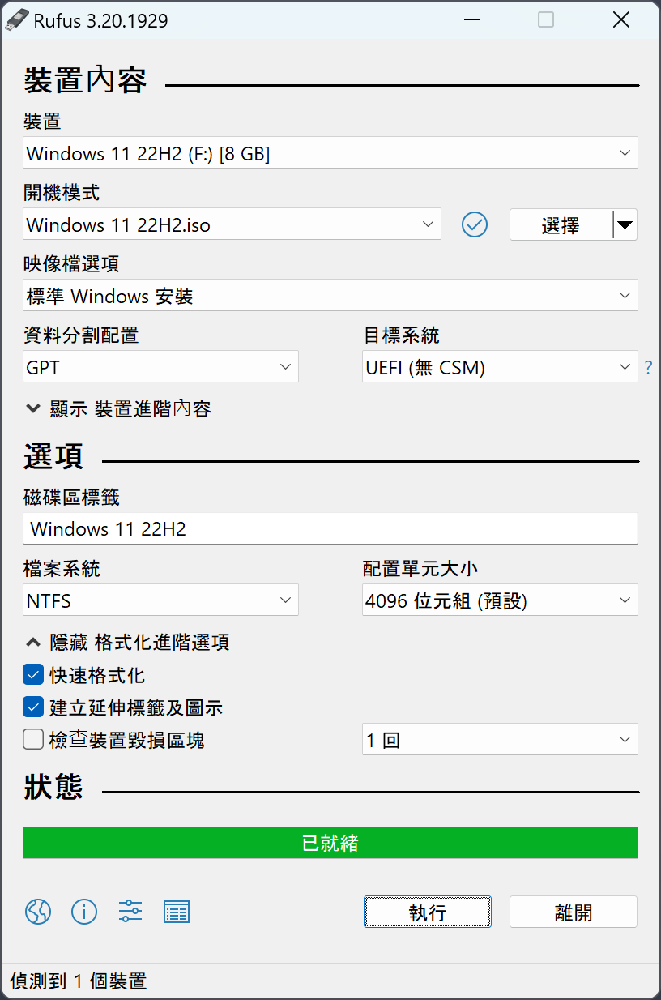
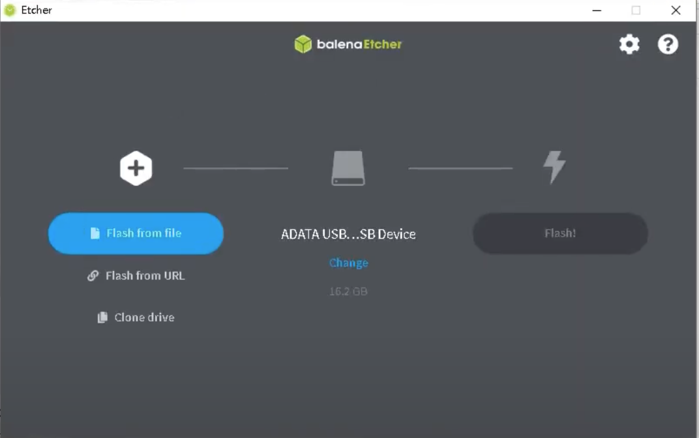
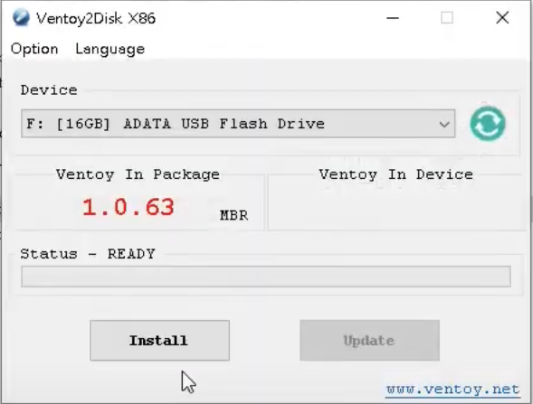
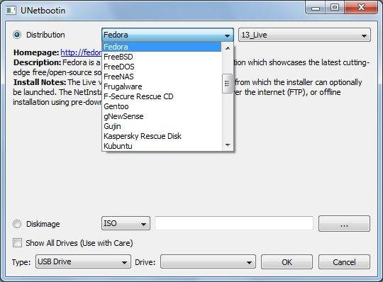

前言
無論你是要安裝新的操作系統、進行系統修復，還是需要創建可啟動的 USB 隨身碟，這篇指南都將提供你所需的步驟和工具。讓我們開始吧！這篇文章將詳細介紹如何將 ISO 映像檔燒錄到 USB 隨身碟。
常用工具
Rufus

- 步驟 1：下載安裝 Rufus
- 步驟 2：準備 USB 隨身碟
- 步驟 3：選擇 ISO檔來源、確認隨身碟位置（ 基本預設即可 ）
- 步驟 4：開始燒錄等待完成
Etcher

- 步驟 1：下載安裝 Etcher
- 步驟 2：準備 USB 隨身碟
- 步驟 3：選擇 ISO檔來源
- 步驟 4：確認隨身碟位置
- 步驟 5：開始燒錄等待完成
Ventoy

- 步驟 1：下載安裝 Ventoy
- 步驟 2：準備 USB 隨身碟
- 步驟 3：打開 Ventoy2Disk.exe
- 步驟 4：確認隨身碟位置
- 步驟 5：選擇 Install
- 步驟 6：等待完成後，可直接將 ISO 直接丟到隨身碟中 （ Window 與 Linux 都可 ）
1
2
3
4
5
6
# 解壓縮後，執行
bash VentoyWeb.sh
# 打開網頁 24680 Port，接下來與 Windows 相同操作UNetbootin

- 步驟 1：下載安裝 UNetbootin
- 步驟 2：準備 USB 隨身碟
- 步驟 3：可選擇版本，軟體會自動幫忙下載，也可手動
- 步驟 4：確認隨身碟位置
- 步驟 5：開始燒錄等待完成